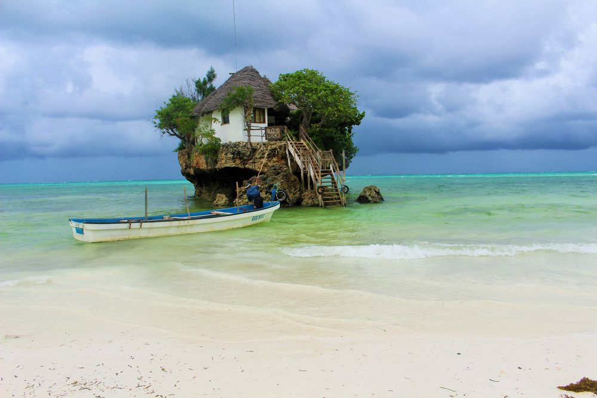
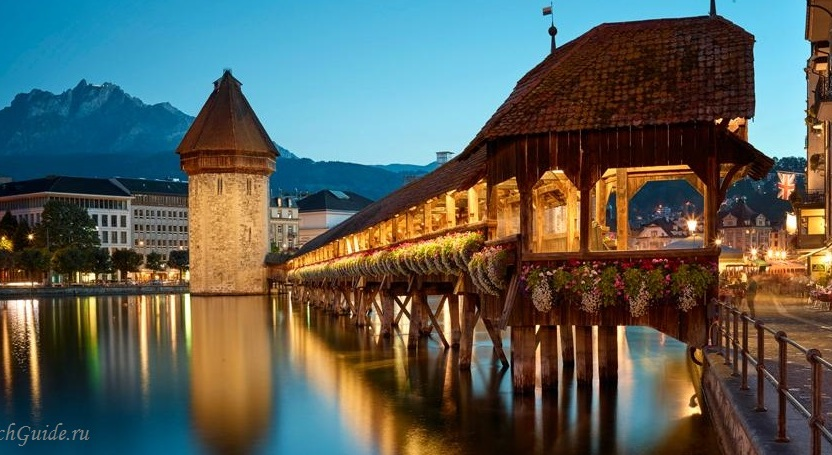
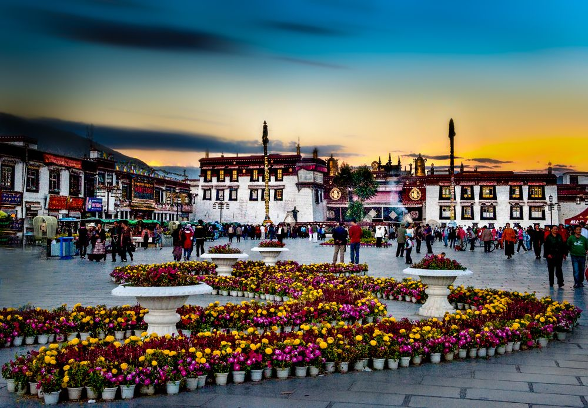
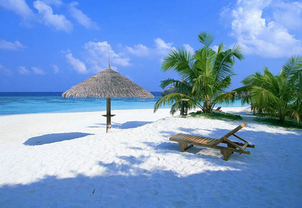
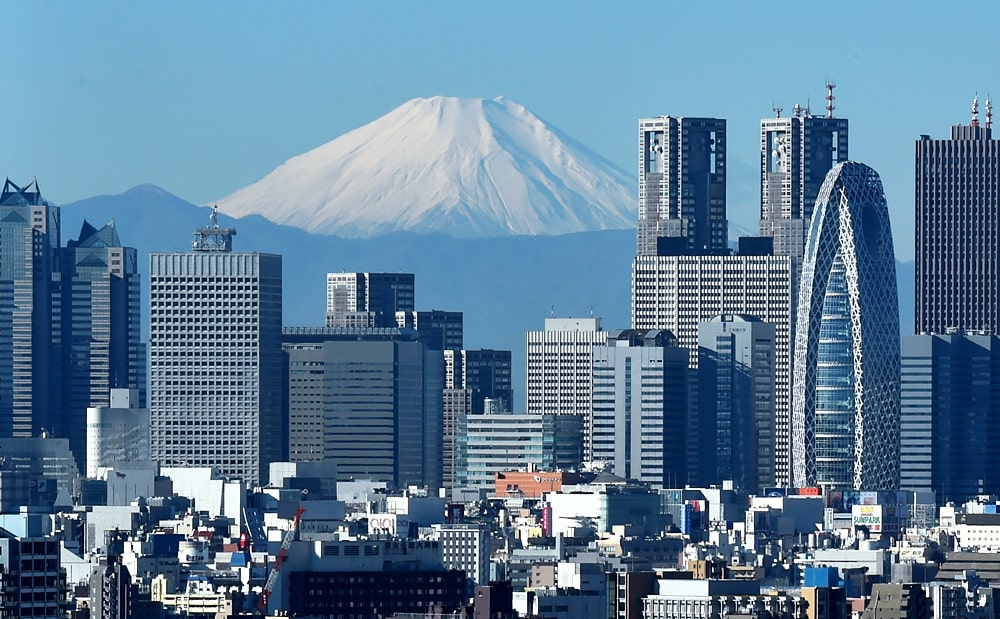
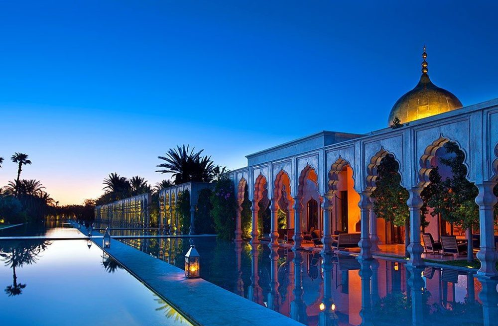
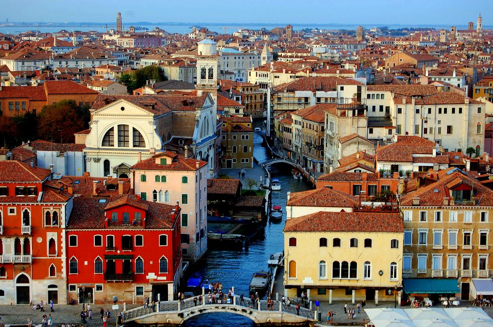
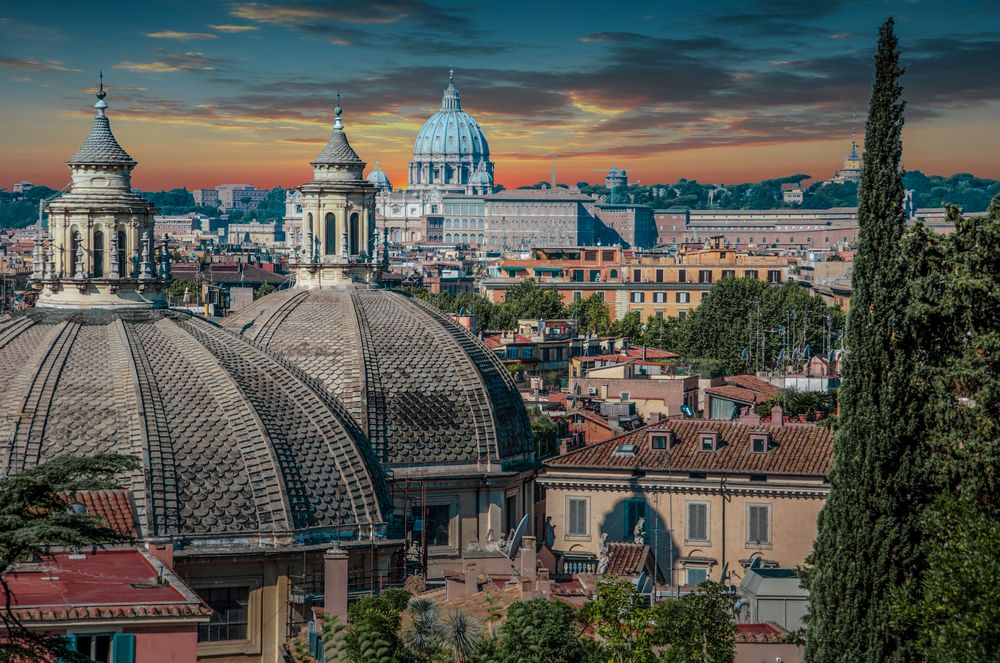

| Name |
Country |
Image |
Description |
Map |
| Bali |
Indonesia |
 |
Beyond stunning beaches and magical temples, Bali has virtually every kind of natural beauty. Glorious mountainous areas
with lush greenery, scenic lakes, gorgeous waterfalls, iconic rice fields, flower gardens, gushing sacred rivers and
secret canyons all make up the island's landscape. |
|
| New York |
USA |
 |
New York has to be one of the most famous cities in the world. Often referred to as the 'Big Apple', this vibrant city
is known for its exclusive shops, flashy Broadway performances, and high-flying business tycoons, and it's a city that
has long captivated people from all over the world |
|
| Zanzibar |
Tanzania |
 |
Zanzibar is the home of idyllic beaches, balmy weather & warm tropical waters. This archipelago is renowned for clear
warm waters, coral reefs and rich marine diversity making it a perfect under-water destination for snorkelling and
diving. |
|
| Luzern |
Switzerland |
 |
Its setting is simply stunning, with the tops of the nearby mountains glistening all year round and the lake's
fjord-like offshoots giving a more Scandinavian feel than Swiss. You can take it all in from one of the historic
paddle-boats that ply the lake, or tour the water's edge on foot |
|
| Lhasa |
China |
 |
Lhasa, the capital of the Tibet Autonomous Region, is located on the north bank of the Lhasa River in the Himalayan
Valley. Erected on top of Red Hill, 3700 meters high, the red and white Potala Palace once served as the winter
residence of the Dalai Lama. |
|
| Samui |
Thailand |
 |
The most famous of all the islands in Thailand is Koh Samui, a beautiful island that is famed for its stunning palm tree
edged beaches and crystal clear waters. Due to its broad appeal the island is visited by all types of travelers from the
budget backpacker to the mega wealthy Hollywood celebrities. |
|
| Tokio |
Japan |
 |
Tokyo, the world's largest metropolis, is known for top-rated restaurants, the Shibuya Crossing, Imperial Palace, cherry
blossoms, markets, and more. The shopping scene includes the Harajuku and Akihabara districts. Tokyo is also famous for
its vending machines, cat cafes, museums, and sacred sites. |
|
| Marrakesh |
Morocco |
 |
Marrakesh comprises an old fortified city packed with vendors and their stalls. This medina quarter is a UNESCO World
Heritage Site. Today it is one of the busiest cities in Africa and serves as a major economic center and tourist
destination. |
|
| Venetciia |
Italy |
 |
Venice, known also as the “City of Canals,” “The Floating City,” and “Serenissima,” is arguably one of Italy's most
picturesque cities. With its winding canals, striking architecture, and beautiful bridges, Venice is a popular
destination for travel. ... Venice is known for its bridges. |
|
| Rome |
Italy |
 |
The ancient Romans build several engineering marvels including magnificent aqueducts, durable roads and splendid
structures like the Colosseum and the Pantheon. Apart from engineering they made important contributions to
architecture, law, literature, science and technology owing to discoveries and innovations |
|